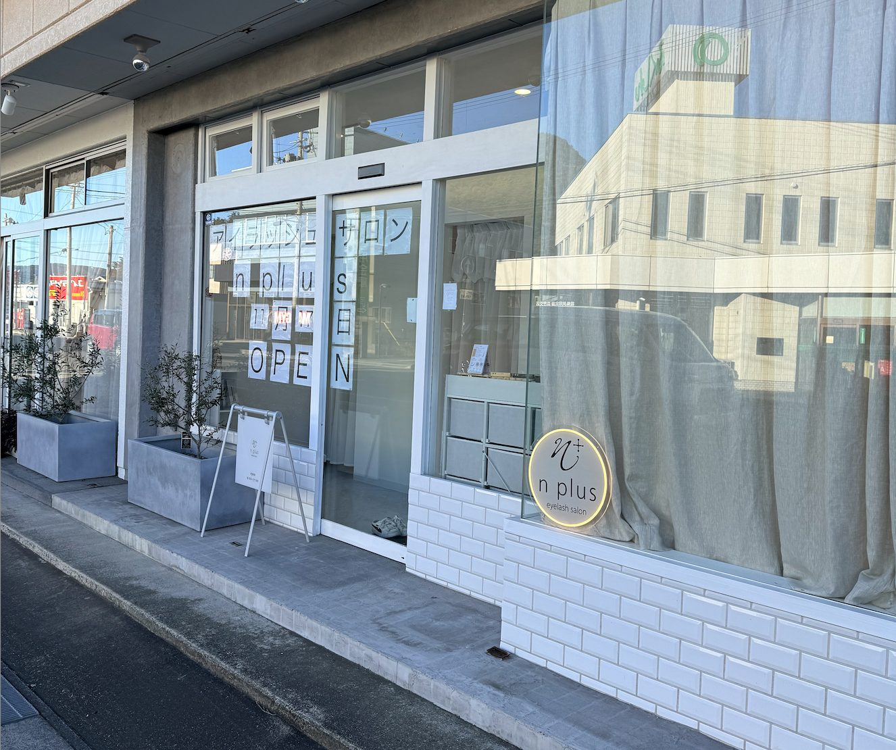

【11月のご報告】n plusが新たに独立オープンしました🌿
こんにちは。アトリエ・ナインの菅野です。

少しずつ秋も深まり、福島も空気がひんやりしてきましたね。
気がつけばもう11月。早いもので、今年もあと2ヶ月を切りました。
n plus、ついに独立オープンしました👁✨
この11月、アイラッシュブランド「n plus」が
森合店内から独立し、専門サロンとして新たにオープンしました。
もともとはhair atelier nine 森合店の一角に併設されていたアイラッシュ部門ですが、
ありがたいことにご予約も増え、ニーズも高まってきたことで、
ついに1店舗として構える決断をしました。
メニュー・空間・スタッフの在り方も、
より「目元美容に特化した専門店」としてアップデートしています。
完全個室・落ち着いた空間で、
まつげ・眉毛・目元のトータルデザインをじっくりご提案できるサロンに。
これからn plusをどう育てていくか、自分としても楽しみです。
スタッフ募集は、引き続き「未来採用」スタンスです✂️
9月でhair atelier nineは10周年を迎えました。
そして11月にはn plusの独立。
今、会社としても少しずつ「次のステージ」に進み始めています。
現在の採用については、明確な「枠」や「人数」はあえて決めずに、
未来に向けて必要な出会いがあれば、柔軟に広げていくスタンスで続けています。
・美容師（スタイリスト／アシスタント）
・アイリスト
働き方：正社員／時短勤務／パート など応相談
興味を持ってくださった方は、まずは気軽にLINEでご連絡ください😊
見学・相談だけでも大歓迎です。
最近の自分の働き方
今は、
・サロンワーク週3日
・経営の日が週3日
って感じで動いています。
昔はほぼ毎日現場に出てたけど、スタッフが増えて、やることも増えて。
SNS、求人活動、労務管理、マニュアル整備、外部とのやりとり…。
結構バタバタしてますが、ちゃんと地に足つけてやってます。
最近は特に、「子育てしながら働ける環境づくり」を本気でやってます。
誰でも無理せず長く働ける環境を整えていきたいし、
そういうことができる会社でありたいなって思ってます。
hairもeyeも、それぞれのブランドが自立して、
でも同じ想いを共有しながら動いている今、
これからの展開がますます楽しみです。
引き続き、どうぞよろしくお願いいたします！
それではまた✂️
株式会社 アトリエ・ナイン
代表 菅野 勇紀
📸 Instagram ：@atelier_nine.kanno
🧵 Threads ：@atelier_nine.kanno